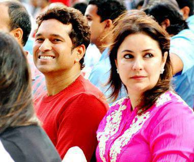
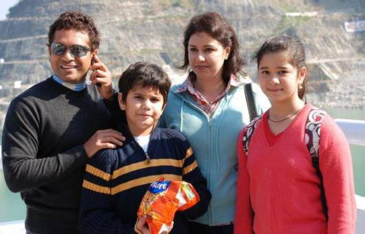

GIVEN HIS FIRST CRICKET BAT AT THE AGE OF 11,TENDULKAR WAS JUST 16 WHEN HE BECAME INDIA'S YOUNGEST TEST CRICKETER....
THEN HOW HE BECAME WHAT HE IS ,IS KNOWN BY EVERY INDIAN BUT ONE RARELY KNOWN TOPIC RELATED TO HIM IS HIS LOVE MARRIAGE..


 HE GOT MARRIED WITH ANJALI TENDULKAR....HE FIRST MET HER IN AN FILM HALL WHERE HIS FRIEND INVITED HIM & ANJALI & SOME OTHERS...
HE GOT MARRIED WITH ANJALI TENDULKAR....HE FIRST MET HER IN AN FILM HALL WHERE HIS FRIEND INVITED HIM & ANJALI & SOME OTHERS...NOW THEY ARE HAVING TWO CHILDREN SARA AND ARJUN TENDULKAR...
SACHIN'S MOTHER WATCHED FIRST TIME A MATCH WHICH WAS SACHIN'S LAST MATCH....HIS CRICKET COACH RAMAKANT ACHREKAR ALSO WATCHED HIS LAST MATCH...
